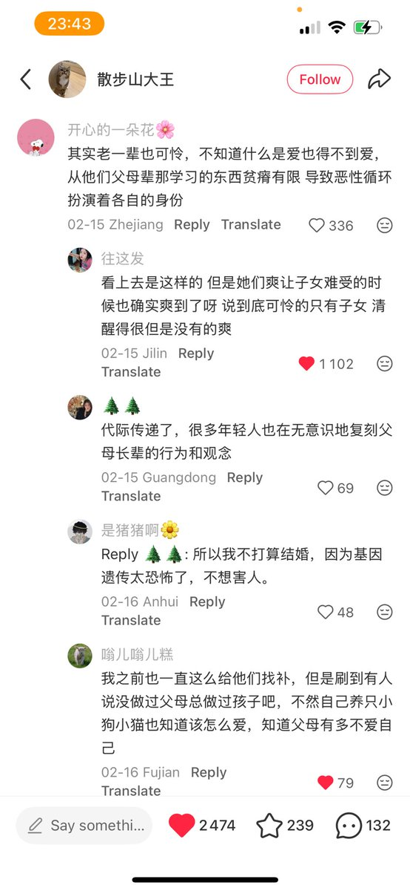
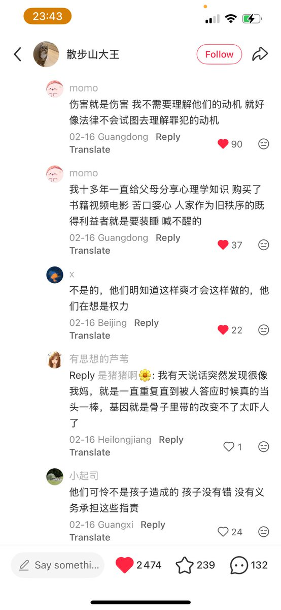
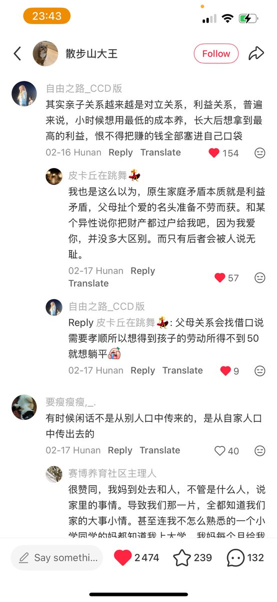
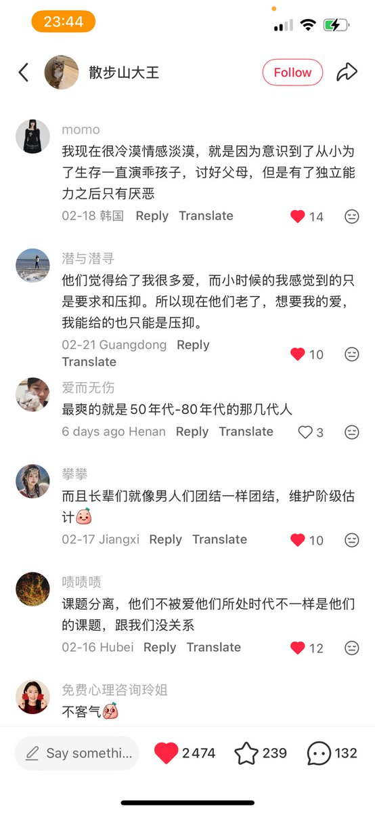

璃羽🍥
@xvliowo
@garrulous_abyss 在他们眼里自己像个工具 而不是一个有自我意识的人（被说我们就是要把你的思想扭成我们大众化的想法这样子的话）




garrulous abyss🌈
@garrulous_abyss
在我曾十多岁的时候，我还一次次地，试图过跟父母沟通，交流。哪怕能有些许的“求同存异”也行。
而现在作为三十多岁的人，只会觉得，如果你父母真心爱你，把你当平等独立的人，那沟通有用。
但如果他们觉得，你只是他们自我的延伸，你只是他们的工具和手段。那就别tm废话了。奴隶没资格和奴隶主谈自由 https://t.co/PNqEUkYUAi